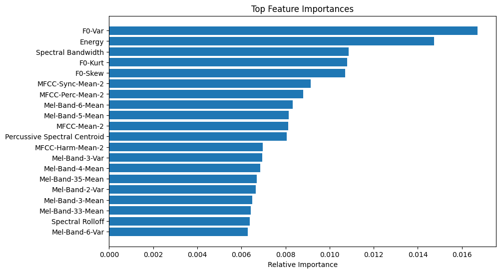

Exploring the intersection of music analysis, perception, and recommendation systems
Studying how the Music Genome Project revolutionized music discovery through detailed attribute analysis. Exploring ways to combine audio features, emotional context, and listener behavior for more nuanced recommendations.
Investigating how musical elements like tempo, timbre, and spectral features can be used to understand artistic evolution and genre characteristics. Using machine learning to uncover patterns in musical style.
Researching how listeners perceive and emotionally connect with different musical elements. Studying the relationship between audio features and emotional response.
A deep dive into how audio features define different periods in an artist's evolution, using Taylor Swift's discography as a test case for audio analysis tools and techniques.

Analysis revealed that energy levels and spectral characteristics are the most distinctive features across albums, demonstrating clear sonic evolution between eras.
Analyzing the effectiveness of different attribute frameworks for music classification and recommendation. Exploring how detailed musical analysis can improve recommendation accuracy.
Developing robust tools for extracting and analyzing musical features from audio files. Testing different approaches to capture both technical and perceptual characteristics.
Working on new approaches to combine audio features with contextual information for more personalized music recommendations.